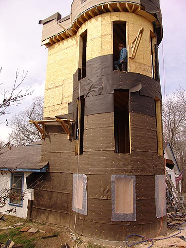
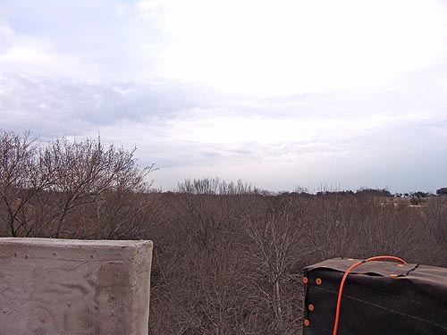

I love the corbels around the top.
Simple and understated, but they really add something.
Tons of tar paper. Most of the work
this week is up on the roof. There's a hatch and the sloped roof will go
to a drain that spits out the side.
The wall around the roof gives
security for walking around up there.

The backside isn't getting done as
fast. We bought some more scaffold, so maybe we'll be able reach and get
this side finished, too.
Notice the drain spout.
Close up of the drain spout. Yippee,
the roof holds water and drains.
The drain hole in the roof. There
are a few spots that puddle up, but so far they hold water. Eventually
we might get them sloping like we should.
The access hatch. Three foot by three
foot. Not the easiest thing to climb though, but we're working on a design
with landings and ladders that might get us there.
Bob didn't care that I was taking
his picture, he wanted breakfast....
From the rooftop we have a view of their
entire open pasture.

I'm sure this will be much prettier
when the trees start blooming. Can't wait to see what spring is like from
the rooftop.
Lynn started with the wire mesh and
scratch coat.
Further along. Lynn learned that the
tar paper nails cause little bumpy problems. He also figured out to knock
down any large bumps before putting on the next coat. Luckily he didn't
have to carry water up for mixing. Still, bringing up the bags wasn't easy.